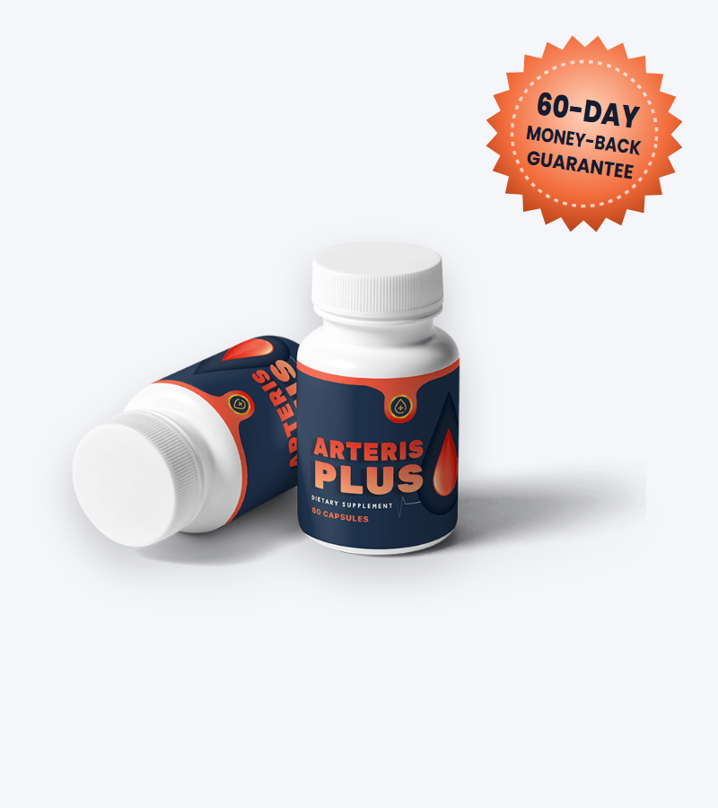
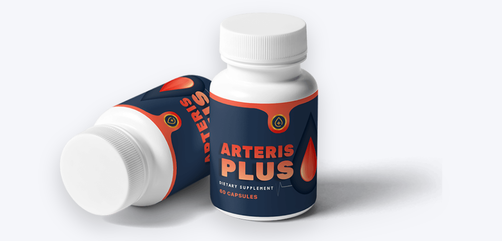

Calm the Nervous System
Passion flower, California poppy and corydalis are traditionally used for anxiety, sleep and tension.*
What's inside Arteris Plus, what calming herbs can and can't do for blood pressure, and how to buy safely

Arteris Plus (also searched as ArterisPlus) is a 60-capsule supplement sold to "maintain healthy blood pressure levels" while boosting energy. Its sales letter names five ingredients: passion flower, marshmallow, corydalis, prickly pear and California poppy seeds.
Three of those are traditionally used as calming or sedating herbs, which makes Arteris Plus closer to a relaxation formula than a typical blood pressure supplement. In this Arteris Plus review we explain the formula, the research, who should avoid it, and the current price and how to order from the official website.
Arteris Plus is a navy-and-orange bottle of 60 capsules sold through a sales letter written by "John Mayers," a 58-year-old from Philadelphia who says he has been researching natural ways to keep blood pressure in a healthy range. Checkout is handled by BuyGoods.
The letter describes "a natural, yet powerful formula" with passion flower, marshmallow, corydalis, prickly pear and California poppy seeds, made in an "FDA approved and GMP certified facility." It also says the capsules are non-GMO, stimulant-free and not habit forming.
No supplement facts label is shown, so the amount of each ingredient isn't public. The same letter template — personal story, 90-second offer, "selling very fast" warning — appears on other supplements from this network.
Arteris Plus is a supplement, not a treatment for high blood pressure, and the FDA doesn't approve supplements or manufacturing facilities.
Passion flower, California poppy and corydalis are traditionally used for anxiety, sleep and tension.*
Prickly pear (Opuntia) provides antioxidants and is studied for blood sugar and cholesterol.*
Marshmallow root contains mucilage traditionally used for the throat and digestion.*
Stress raises blood pressure in the short term, so a calming formula could, in theory, help with stress-related spikes. But long-term high blood pressure is mostly driven by blood vessel stiffness, kidney function, salt, weight, genetics and age — and none of the named ingredients has been shown to treat those.
The five Arteris Plus ingredients named in the official sales letter. Amounts are not disclosed.
| Ingredient | What it is | Traditional / studied use |
|---|---|---|
| Passion flower | Passiflora incarnata | Anxiety and sleep |
| Marshmallow | Althaea officinalis root | Soothing coughs and sore throats |
| Corydalis | Corydalis yanhusuo tuber | Pain relief and sedation (contains tetrahydropalmatine) |
| Prickly pear | Opuntia cactus | Blood sugar and cholesterol |
| California poppy seeds | Eschscholzia californica | Anxiety, sleep and mild pain |
The letter doesn't say whether these are the only ingredients or give the amount of each.
Looking at the list as a whole, three of the five ingredients — passion flower, corydalis and California poppy — are calming or sedating herbs. That doesn't match the sales page's promise of "boosting your energy levels," and it raises the chance of drowsiness and interactions with other sedating medicines.
Our take: Arteris Plus is essentially a relaxation and sleep blend marketed for blood pressure. Well-studied blood pressure nutrients such as potassium, magnesium, beetroot nitrates or garlic aren't on the list.
| Ingredient | Typical studied dose | Evidence for blood pressure |
|---|---|---|
| Passion flower | 90–500 mg extract | Small anxiety trials; blood pressure data mainly in animals |
| California poppy | Combined products | Anxiety in small combination studies; no BP trials |
| Corydalis | Traditional decoctions | Pain and sedation; no reliable BP trials in people |
| Prickly pear | Pads or fruit extract | Small studies on blood sugar and cholesterol; little on BP |
| Marshmallow root | Teas and lozenges | No blood pressure evidence |
We couldn't find any human trial showing that these herbs — alone or together — lower blood pressure in people with hypertension. The calming herbs may reduce anxiety, which can help some people feel better and may slightly blunt stress-related spikes.
By contrast, supplements with real blood pressure evidence — such as potassium (from food), beetroot juice, garlic extract and cocoa flavanols — produce small reductions of a few points at studied doses.
High blood pressure rarely causes symptoms, but it's a leading cause of heart attacks, strokes and kidney disease. These steps have strong evidence and can lower readings as much as some medicines:
Measure at home with a validated upper-arm monitor, seated, after five minutes' rest, at the same times each day. Normal is below 120/80; 130/80 or higher on repeated readings is high.
Reducing sodium to under about 2,000 mg a day and eating potassium-rich foods (beans, potatoes, bananas, leafy greens) can lower systolic pressure by 5–10 points.
Plenty of vegetables, fruit, whole grains, low-fat dairy, nuts and fish — the DASH diet lowered blood pressure about as much as a single medication in trials.
150 minutes a week of brisk walking or cycling lowers systolic pressure by around 5–8 points.
Each kilogram lost lowers blood pressure about 1 point; keeping alcohol to one or two drinks a day helps too.
If your doctor prescribes blood pressure medicine, take it consistently — don't swap it for a supplement.
Categories used by the American Heart Association for adults (mmHg).
| Category | Top number (systolic) | Bottom number (diastolic) | What to do |
|---|---|---|---|
| Normal | Below 120 | Below 80 | Keep up healthy habits; check at least once a year |
| Elevated | 120–129 | Below 80 | Lifestyle changes; recheck in 3–6 months |
| High — stage 1 | 130–139 | 80–89 | Lifestyle changes; your doctor may suggest medicine depending on heart risk |
| High — stage 2 | 140 or higher | 90 or higher | See your doctor; medicine is usually recommended |
| Severe | 180 or higher | 120 or higher | Recheck after 5 minutes; get urgent care if it stays high or you have chest pain, breathlessness or vision changes |
A single high reading doesn't mean you have hypertension — blood pressure varies through the day and rises with stress, caffeine, a full bladder or talking during the measurement. Doctors look at the average of several readings taken on different days.
Bringing a week of home readings to your appointment gives your doctor a much clearer picture than one reading in the clinic, and it's the best way to judge whether anything you try — diet, exercise or a supplement — is really working.
Possible benefits based on the named ingredients.*
Passion flower and California poppy may ease anxiety and help sleep.*
Lower stress may slightly reduce short-term blood pressure rises.*
Prickly pear supplies plant antioxidants.*
Free US shipping and a 60-day guarantee.
Arteris Plus's herbs are generally mild, but several affect the nervous system, so interactions matter.
Arteris Plus is a calming herbal blend sold as a blood pressure supplement. It may help some people relax, but there's no evidence it lowers blood pressure in a meaningful way, and its sedating ingredients make it a poor fit for anyone taking sleep, anxiety or pain medicines.
If you want to support healthy blood pressure, home monitoring, less salt, more potassium-rich food, regular activity and — when needed — prescribed medicine are far more effective. If you still want to try Arteris Plus, check with your doctor and use the 60-day guarantee if you don't see a difference in your readings.
Visit the Arteris Plus Official Website| Option | What it does | Typical cost | Evidence |
|---|---|---|---|
| Arteris Plus | Calming herbal blend | $49–$69 a month | None for blood pressure |
| DASH-style diet + less salt | Lowers sodium, adds potassium | Grocery cost | Strong (about 8–11 points) |
| Regular aerobic exercise | Improves vessel function | Free | Strong (about 5–8 points) |
| Beetroot juice / garlic extract | Nitrates / allicin | $10–$25 a month | Small reductions |
| Prescription medicines | Several proven drug classes | Often low cost | Strongest |
The seller says Arteris Plus is only sold through its own page. To get the genuine ArterisPlus formula and the guarantee:
Each Arteris Plus bottle is a 30-day supply, covered by the 60-day money-back guarantee.
30-Day Supply
$69/bottle
Free US shipping
180-Day Supply
$49/bottle
Biggest discount
90-Day Supply
$59/bottle
Free US shipping
Prices checked on the official order page on October 26, 2026 and may change. International orders pay shipping. One-time payment.

Arteris Plus comes with a 60-day money-back guarantee. The seller says that if you're not happy with the results, you can contact them within 60 days of purchase — even if you've used the entire bottle — for a full refund.
Keep your BuyGoods receipt and start the request before day 60.
Try Arteris Plus Risk-FreeArteris Plus is a dietary supplement sold to support healthy blood pressure and energy. Each bottle holds 60 capsules. The sales page names five ingredients: passion flower, marshmallow, corydalis, prickly pear and California poppy seeds.
There are no published studies on Arteris Plus, and none of its named ingredients has good human evidence for lowering blood pressure. Passion flower and California poppy may reduce anxiety and stress, which can have a small, indirect effect. Arteris Plus should not replace blood pressure medicine.
The seller names passion flower, marshmallow, corydalis, prickly pear and California poppy seeds. It doesn't publish a supplement facts label, so the amounts and any other ingredients are unknown.
On the official website Arteris Plus costs $69 for one bottle, $177 for three bottles ($59 each) and $294 for six bottles ($49 each). Shipping is free in the US.
Passion flower, corydalis and California poppy can cause drowsiness and add to the effects of sedatives, sleep medicines, alcohol and some antidepressants. Corydalis has been linked to rare cases of liver injury. Avoid Arteris Plus during pregnancy and ask your doctor first if you take any medication.
Only with your doctor's approval. Don't stop or reduce prescribed blood pressure medicine because you're taking a supplement. Keep monitoring your blood pressure at home.
The sales page doesn't list directions. With 60 capsules described as a 30-day supply, the usual serving is two capsules a day; follow the label on your bottle. Because some ingredients are calming, avoid driving until you know how you react.
Both refer to the same supplement. The bottle reads "Arteris Plus," and many people search for it as one word.
No. The order page says it's a one-time payment with no subscription or hidden charges.
Arteris Plus comes with a 60-day money-back guarantee. The seller says to contact them within 60 days of purchase, even if you've used the whole bottle, for a full refund.
The seller says Arteris Plus is only sold through its official page, with checkout by BuyGoods. Buying there gives you the 60-day guarantee.
For most adults, normal blood pressure is below 120/80 mmHg. Readings of 130/80 or higher on repeated measurements are considered high, and 180/120 or higher needs urgent medical care.
Get Arteris Plus for as little as $49 per bottle on the 6-bottle package with free US shipping and a 60-day money-back guarantee. Keep taking any blood pressure medicine your doctor has prescribed.
Order Arteris Plus Now